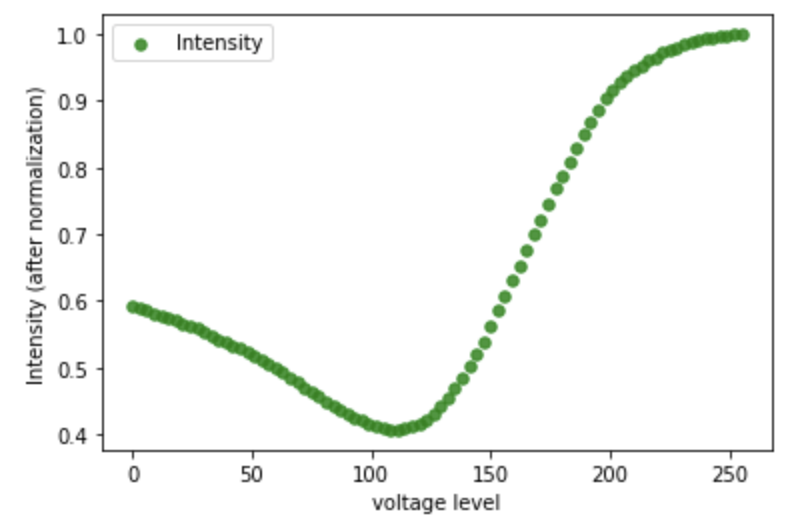

Case-study 1#
Device-to-System Co-design using Spatial Light Modulator (Visible)#
Author: Yingjie Li (lyj1201@github)
In this case study, we will show the potential of our system to make hardware-software codesign. To make the system more practical to setup, we need to consider the information of hardware used in the system in simulation, i.e., hardware-software codesign. In our system, we will have laser source, diffractive layers (with phase modulation) and detectors. For laser source, there can be different modes; for diffractive layers, it can have different optical properties due to its materials and fabrication; for detectors, it can have different noise levels. We will make our simulation see these limitations from hardware to get better guidance for our experiments.
For the first thing, we consider the limitations from diffractive layers. The Spatial Light Modulator (SLM). The SLM is an array of liquid crystals, each liquid crystal is a pixel, and acts as a phase modulator in our system. By applying different voltage levels (0 to 255) to each pixel in the SLM array, the free-space light going through the pixel will be phase-modulated accordingly. Moreover, the intensity of the light after going through the pixel can be different with the change of the applied voltage. Thus, the function of voltage vs phase and voltage vs intensity should be included in our simulation. The SLM we used in our experiments is shown below.
We first setup the system to test the function of SLM with laser source, SLM and detector. With the rough information from the handbook of SLM (https://holoeye.com/lc-2012-spatial-light-modulator/), we set the system with specific input polarization and output polarization and test the output after applying the voltage of 256 levels. The results are shown below.
{kind=link}
{kind=link}

To deal with discrete selection of the phase modulator, Gumbel-Softmax is employed in layers.DiffractiveLayer to directly train D2NNs w.r.t hardware specification, where the HW-specs are differentiable functions. The parameter amp_factor is used to regularize the training of the model.
import os
import csv
from time import time
import random
import pathlib
import argparse
import numpy as np
from tqdm import tqdm
import pandas as pd
import torch
import torchvision
import torch.nn.functional as F
from torchvision import transforms
from torch.utils.data import DataLoader
import matplotlib.pyplot as plt
import pickle
import lightbridge.utils as utils
import lightbridge.layers as layers
class NetCodesign(torch.nn.Module):
def __init__(self, phase_func, intensity_func, wavelength=5.32e-7, pixel_size=0.000036, batch_norm=False, sys_size = 200, distance=0.1, num_layers=2, precision=256, amp_factor=6):
super(NetCodesign, self).__init__()
self.amp_factor = amp_factor
self.size = sys_size
self.distance = distance
self.phase_func = phase_func.cuda()
self.intensity_func = intensity_func.cuda()
self.wavelength = wavelength
self.pixel_size = pixel_size
# layers.DiffractiveLayer utilizes Gumbel-Softmax to directly train D2NNs w.r.t hardware specification, where
# the HW-specs are differentiable functions
self.diffractive_layers = torch.nn.ModuleList([layers.DiffractiveLayer(self.phase_func, self.intensity_func,
wavelength=self.wavelength, pixel_size=self.pixel_size, size=self.size,
distance=self.distance, amplitude_factor = amp_factor, phase_mod=True) for _ in range(num_layers)])
self.last_diffraction = layers.DiffractiveLayer(None, None, wavelength=self.wavelength, pixel_size=self.pixel_size,
size=self.size, distance=self.distance, phase_mod=False)
# 200 by 200 system size det design
self.detector = layers.Detector(x_loc = [46, 46, 46, 85, 85, 85, 85, 125, 125, 125],
y_loc = [46, 93, 140, 46, 78, 110, 142, 46, 93, 140], size=sys_size, det_size = 20)
def forward(self, x):
for index, layer in enumerate(self.diffractive_layers):
x = layer(x)
x = self.last_diffraction(x)
output = self.detector(x)
return output
Then, the training code is shown as below. The default optimizer is Adam implemented in Pytorch and we use MSE as the loss function. At the end of each epoch, we will have the evaluation code with validation dataet to evaluate the model.
def train(model,train_dataloader, val_dataloader,input_padding, lambda1, args):
criterion = torch.nn.MSELoss(reduction='sum').cuda()
print('training starts.')
optimizer = torch.optim.Adam(model.parameters(), lr=args.lr)
scheduler = torch.optim.lr_scheduler.StepLR(optimizer,step_size=20, gamma=0.5)
for epoch in range(args.start_epoch + 1, args.start_epoch + 1 + args.epochs):
log = [epoch]
model.train()
train_len = 0.0
train_running_counter = 0.0
train_running_loss = 0.0
tk0 = tqdm(train_dataloader, ncols=150, total=int(len(train_dataloader)))
for train_iter, train_data_batch in enumerate(tk0):
train_images, train_labels = utils.data_to_cplex(train_data_batch)
train_outputs = model(train_images)
train_loss_ = lambda1 * criterion(train_outputs, train_labels)
train_counter_ = torch.eq(torch.argmax(train_labels, dim=1), torch.argmax(train_outputs, dim=1)).float().sum()
optimizer.zero_grad()
train_loss_.backward(retain_graph=True)
optimizer.step()
train_len += len(train_labels)
train_running_loss += train_loss_.item()
train_running_counter += train_counter_
train_loss = train_running_loss / train_len
train_accuracy = train_running_counter / train_len
tk0.set_description_str('Epoch {}/{} : Training'.format(epoch, args.start_epoch + 1 + args.epochs - 1))
tk0.set_postfix({'Train_Loss': '{:.2f}'.format(train_loss), 'Train_Accuracy': '{:.5f}'.format(train_accuracy)})
scheduler.step()
log.append(train_loss)
log.append(train_accuracy)
torch.save(model.state_dict(), (args.model_save_path + str(epoch) + args.model_name))
print('Model : "' + args.model_save_path + str(epoch) + args.model_name + '" saved.')
with open(args.result_record_path, 'a', newline="") as csvfile:
writer = csv.writer(csvfile)
writer.writerow(log)
val_loss, val_accuracy = eval(model, val_dataloader, epoch,input_padding, args)
log.append(val_loss)
log.append(val_accuracy)
return train_loss, train_accuracy, val_loss, val_accuracy, log
def eval(model, val_dataloader, epoch, input_padding, args):
criterion = torch.nn.MSELoss(reduction='sum').cuda()
with torch.no_grad():
model.eval()
val_len = 0.0
val_running_counter = 0.0
val_running_loss = 0.0
tk1 = tqdm(val_dataloader, ncols=100, total=int(len(val_dataloader)))
for val_iter, val_data_batch in enumerate(tk1):
val_images, val_labels = utils.data_to_cplex(val_data_batch)
val_outputs = model(val_images)
val_loss_ = criterion(val_outputs, val_labels)
val_counter_ = torch.eq(torch.argmax(val_labels, dim=1), torch.argmax(val_outputs, dim=1)).float().sum()
val_len += len(val_labels)
val_running_loss += val_loss_.item()
val_running_counter += val_counter_
val_loss = val_running_loss / val_len
val_accuracy = val_running_counter / val_len
tk1.set_description_str('Epoch {}/{} : Validating'.format(epoch, args.start_epoch + 1 + args.epochs - 1 ))
tk1.set_postfix({'Val_Loss': '{:.5f}'.format(val_loss), 'Val_Accuarcy': '{:.5f}'.format(val_accuracy)})
return val_loss, val_accuracy
Simple training results setups: learning rate = 0.7, amplitude_factor=50, epochs=20, dataset=MNIST-10)
[00:11<00:00, 8.50it/s, Train_Loss=0.06, Train_Accuracy=0.96553]
Epoch 10/20 : Validating: 100%|█| 17/17 [00:02<00:00, 6.94it/s, Val_Loss=0.07025, Val_Accuarcy=0.96]
# example of using code tutorial_02_codesign.py: training a 2-layer D2NN with SLM parameters defined in device_parameters/ folder
python tutorial_02_codesign.py --phase-file=device_parameters/phase.csv --intensity-file=device_parameters/intensity.csv --lr=0.7 --depth=2 --batch-size=600 --dataset=mnist --distance=0.6604 --sys-size=200 --amp-factor=50